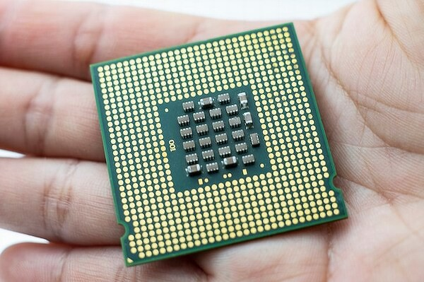
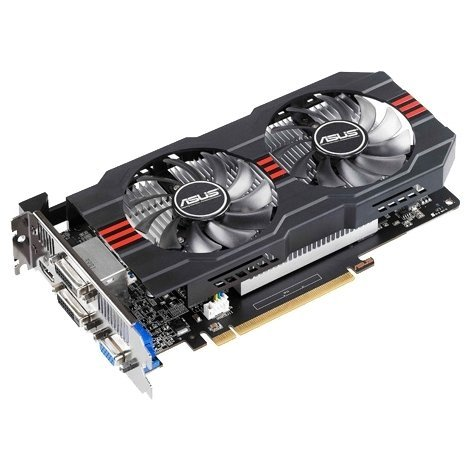
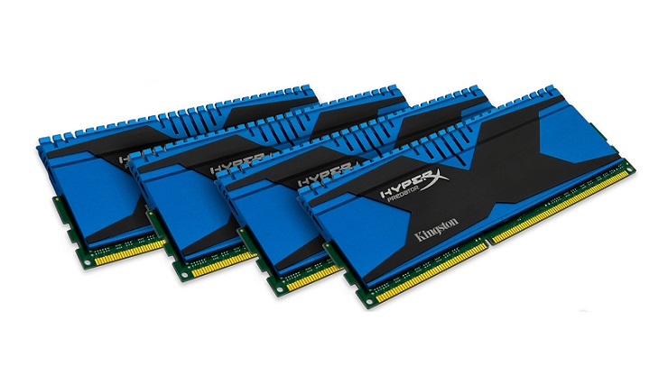
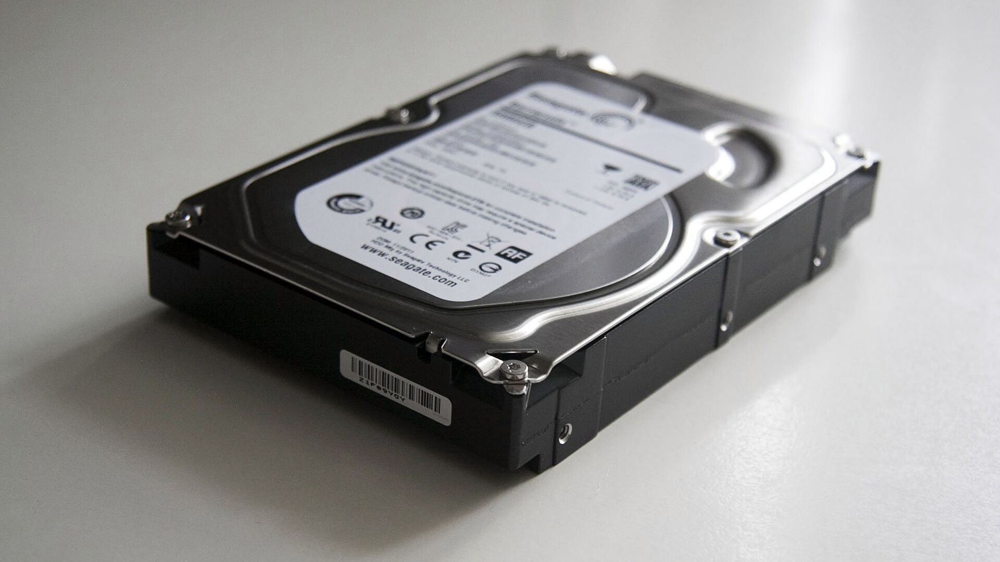
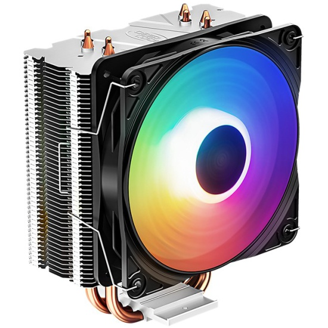
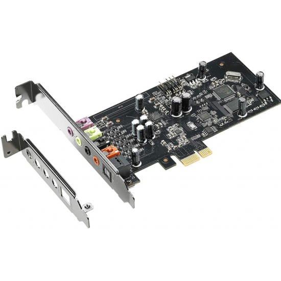
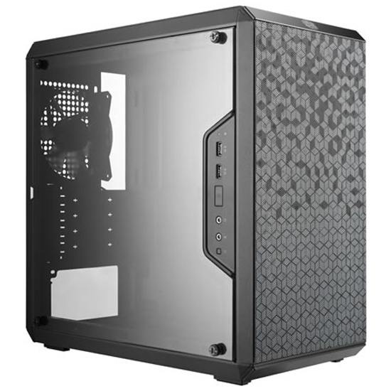

Материнская плата – это печатная плата, которая предназначена для подключения основных комплектующих компьютера. Часть из них, например, процессор или видеокарта устанавливается непосредственно на саму материнскую плату в предназначенный для этого разъем. А другая часть комплектующих, к примеру, жесткий диск или блок питания, подключается к материнской плате с помощью специальных кабелей.
Процессор

Процессор – это микросхема и одновременно «мозг» компьютера. Почему? Потому что он отвечает за выполнение всех операций. Чем лучше процессор тем быстрее он будет выполнять эти самые операции, соответственно компьютер будет работать быстрее. Процессор конечно влияет на скорость работы компьютера, и даже очень сильно, но от вашего жесткого диска, видеокарты и оперативной памяти также будет зависеть скорость работы ПК.
Видеокарта

Видеокарта или по-другому графический плата, предназначена для вывода картинки на экран монитора. Она также устанавливается в материнскую плату, в специальный разъем PSI-Express. Реже видеокарта может быть встроена в саму материнку, но её мощности чаще всего хватает только для офисных приложений и работы в интернете.
Оперативная память

Оперативная память – это такая прямоугольная планка, похожа на картридж от старых игровых приставок. Она предназначена для временного хранения данных. К примеру, она хранит буфер обмена. Копировали мы какой-то текст на сайте, и тут же он попал в оперативку. Информация о запущенных программах, спящий режим компьютера и другие временные данные хранятся в оперативной памяти.
Жесткий диск

Жесткий диск, в отличие от оперативной памяти, предназначен для длительного хранения файлов. По-другому его называют винчестер. Он хранит данные на специальных пластинах. Также в последнее время распространились SSD диски.
Системы охлаждения

Система охлаждения – это вентиляторы, которые охлаждают комплектующие. Обычно установлено три и более кулеров. Обязательно один на процессоре, один на видеокарте, и один на блоке питания, а далее уже по желанию. Если будет что-то тепленьким, то желательно охлаждать. Устанавливаются также вентиляторы на жесткие диски и в самом корпусе. Если кулер в корпусе установлен на передней панели, то он забирает тепло, а кулеры установленные на заднем отсеке подают в системних холодный воздух.
Звуковая карта

Звуковая карта выводит звук на колонки. Обычно она встроена в материнскую плату. Но бывает, что она либо ломается, и поэтому покупается отдельно, либо же изначально качество стандартной владельца ПК не устраивает и он покупает другую звуковуху. В общем звуковая карта также имеет право быть в этом списке устройств для ПК.
Блок питания
Блок питания нужен для того, чтобы все вышеописанные устройства компьютера заработали. Он обеспечивает все комплектующие необходимым количеством электроэнергии.
Корпус

А чтобы материнскую плату, процессор, видеокарту, оперативную память, жесткий диск, дисковод, звуковую карту, блок питания и возможно какие-то дополнительные комплектующие было куда-то засунуть, нам понадобится корпус. Там все это аккуратно устанавливается, закручивается, подключается и начинает ежедневную жизнь, от включения до выключения. В корпусе поддерживается необходимая температура, и все защищено от повреждений.